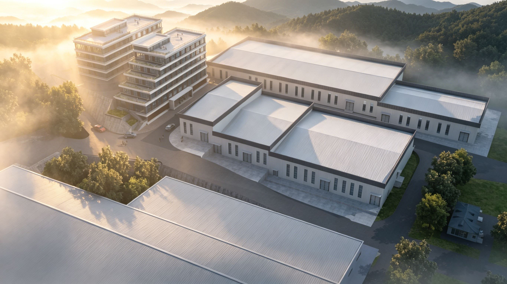
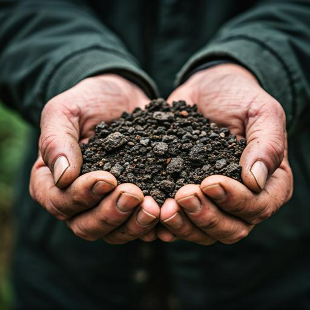
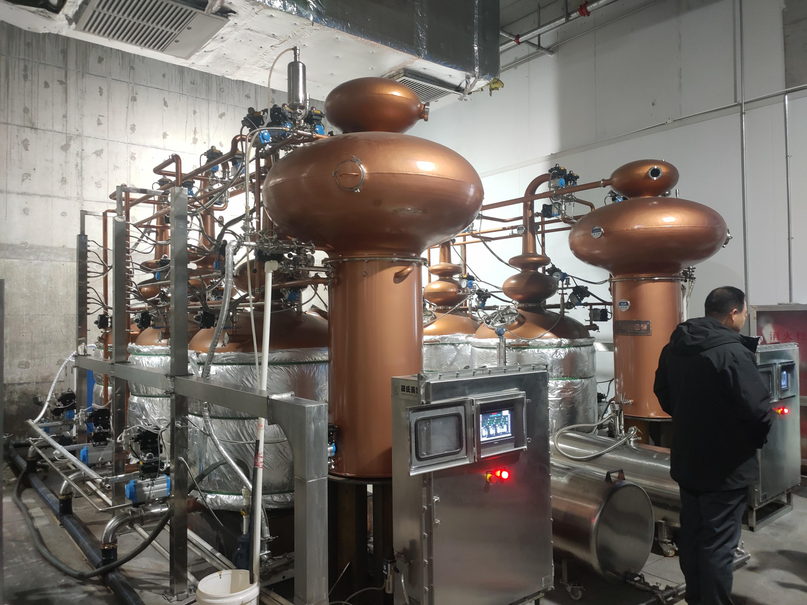
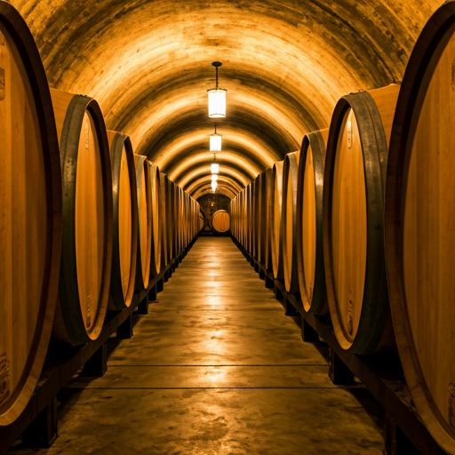
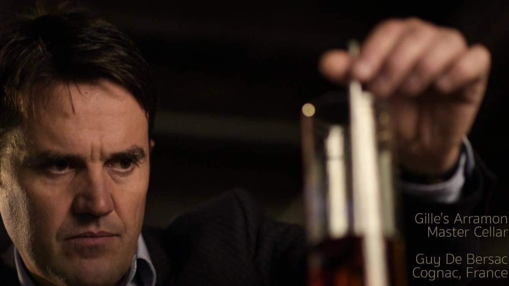
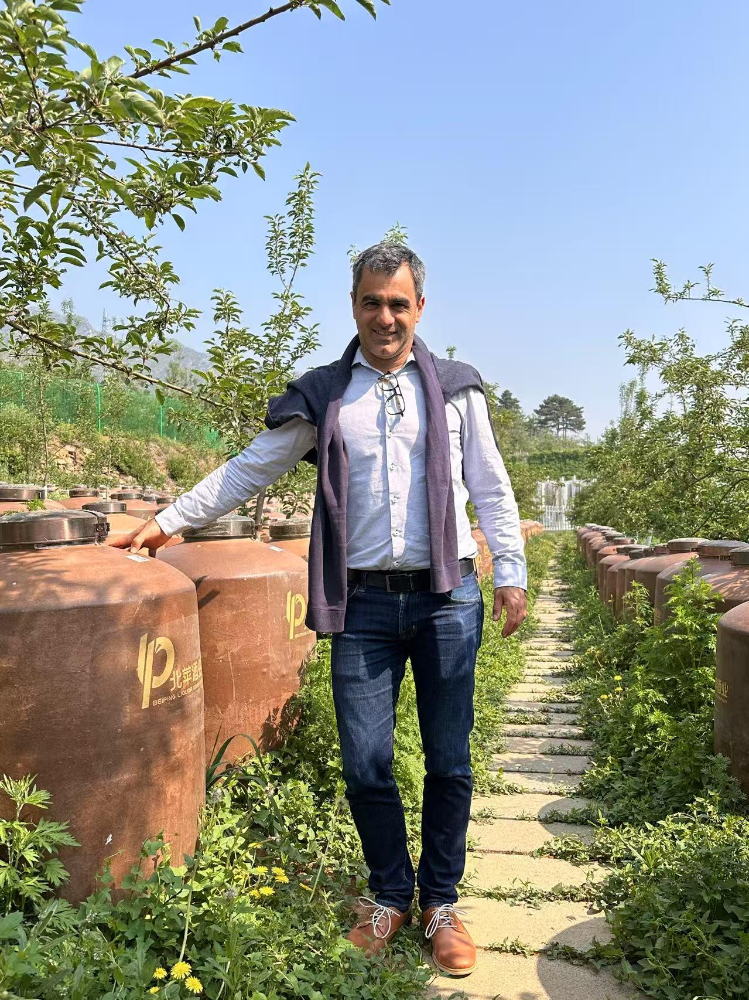
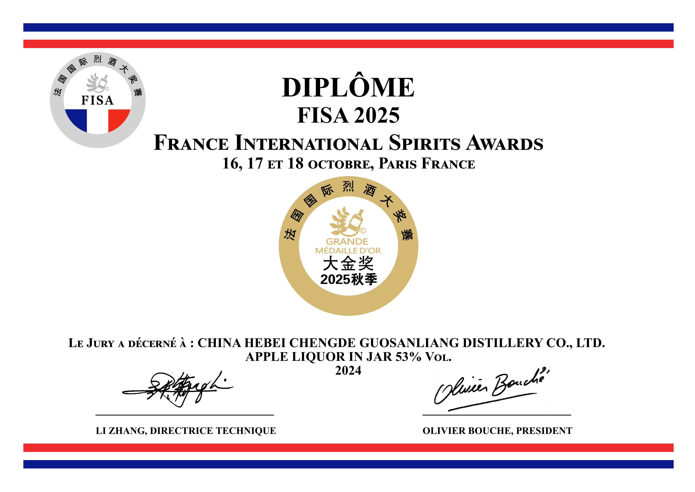
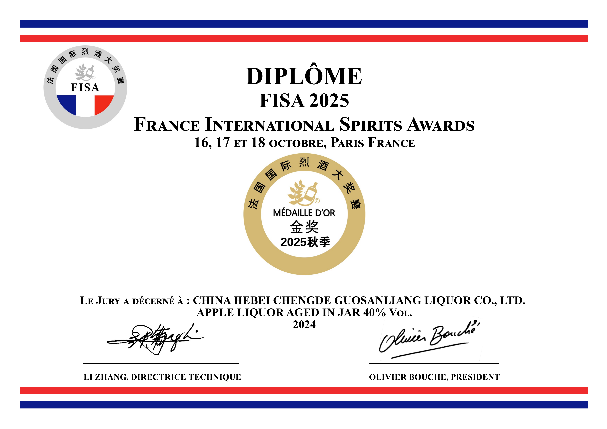

品牌故事
承德国光苹果与燕山古老精神相遇。我们不仅在酿造美酒，更在策展滦河河谷的风土精髓。

风土故事
承德坐落于燕山山脉之中，为传奇国光苹果提供了独一无二的海拔高度与昼夜温差条件。滦河在此滋养着富含矿物质的土壤，孕育出我们在每瓶佳酿中所凝聚的风土精华。国光苹果在承德的种植历史可追溯至20世纪50年代，承德县如今已成为中国国光苹果之乡，栽培面积18万余亩，年产量20万吨，占全国国光苹果总产量的30%以上。
我们的采摘是一场关于时机的仪式。等待第一场霜降亲吻果实，使糖分凝聚、酸度提升，最终酿成一款承载北方峰峦清冽之气的苹果酒。
「果三两」三字，何解？
每一个字都是承诺，每一笔都是工艺
纯果酿造
原料只有果。以河北承德国家地理标志保护产品——国光苹果为唯一原料，100%纯苹果汁发酵，不添加任何外来成分。
紫铜三釜蒸馏
与茅台同类的三釜蒸馏提纯工艺。三重蒸馏层层精萃，只取最纯粹的"生命之水"，成就酒液的清澈与风味深度。
双储陈酿
陶坛存储 + 法国橡木桶存储，双重载体赋予酒液截然不同的层次。泥土矿物气息与木质香草气息交织，形意兼备。
「果三两」三字，亦可拆解为"果酒"二字——这是品牌最直接的承诺。
从苹果到佳酿 · 每一步都有依据
果三两以现代精准发酵技术为核心，将国光苹果的自然风土转化为可复现的品质标准。
霜降后人工逐颗甄选，糖度达标方可入库
4℃以下保鲜，24小时内完成入库处理
恒温发酵室，精确控温±0.5℃，锁住果香
三釜提纯工艺，择优摘酒，生命之水诞生
传统陶坛静置，酒体与泥土气息深度融合
法国橡木桶二次陈酿，赋予层次与深度
多批次理化检测，符合国家食品安全标准
限量手工封蜡，编号出厂，可追溯产品批次
匠心传承

发酵炼金术
可持续耕作
根脉传承

双储陈酿
「果·酒·旅」哲学
国际顶级酿酒师团队
汇聚法国国立酿酒师与中国国家级评委，将东方风土以世界语言呈现

Gilles ARRAMON 博士
蒸馏发酵顾问
- ·法国干邑产区多品牌首席调酒师
- ·全欧洲前三蒸馏酒厂逾25年经验
- ·精通白兰地、朗姆、威士忌、金酒等
- ·多次国际品酒大赛大奖得主
陈云海
首席酿酒顾问
- ·中国国家级葡萄酒评委
- ·中国酒业协会一级品酒师
- ·法国拉氟德集团（LAFFORT）中国区负责人
- ·法国巴朗酒庄（CHATEAU Ballan-Larquette）董事

Matthieu De Pannemaecker
橡木桶陈酿顾问
- ·法国橡木桶专家（Jarnac橡木桶厂总负责人）
- ·丰富的发酵、蒸馏、陈酿、品鉴经验
- ·服务全球多家干邑、雅文邑、白兰地酒庄
荣誉与认可
东方匠心，世界共鉴
FISA 法国国际烈酒大奖赛 · 大金奖 + 最高分 Trophy
53%vol 果三两苹果烈酒 · 2025年10月 · 水果及其他蒸馏酒类别


FISA 法国国际烈酒大奖赛 · 金奖
40%vol苹果烈酒 · 2025年10月
FISA 法国国际烈酒大奖赛 · 银奖
53%vol苹果烈酒 · 2025年10月
CFWA 中国果酒大奖赛 · 金奖 × 2
40%vol & 53%vol苹果烈酒 · 2025年9月
IGC 国际烈酒（香港）大赛 · 银奖
40%vol苹果烈酒 · 2025年3月
CFWA 中国果酒挑战大奖赛 · 金奖
国光苹果蒸馏酒 · 2024年7月
星光·燕赵号专列 · 承德特产名片
苹果酒全系列亮相 · 2026年2月
省级农业产业化
重点龙头企业
农业农村部认定
国家级生态农场
县级非物质文化遗产
苹果酒制造技艺
参与起草国家标准
《白兰地》GB/T 11856.2
企业愿景
彰显风土
让承德国光苹果成为中国地域风土品牌的代表，让世界了解燕山的自然馈赠。
生态和谐
探索更可持续的果园管理方式，将生态保护融入每一个生产环节。
文化桥梁
打造「果·酒·旅」融合体验，邀请更多人走进燕山，感受承德的自然与文化。